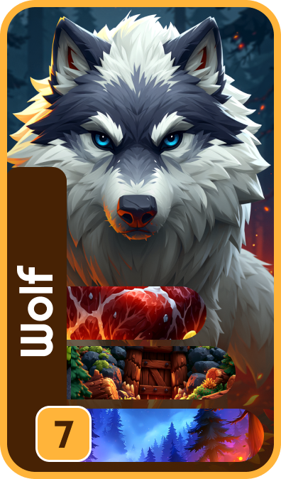
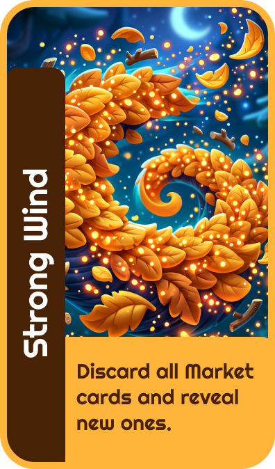
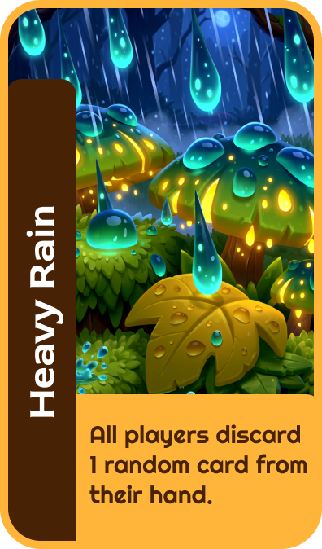

Woodland Cards
Mobile card game — commercial project
Role
Game & UI/UX Designer
Type
Mobile card game — commercial (under NDA)
Scope
Mechanics · rules · UI · visual direction
About the project
Woodland Cards is a real commercial mobile card game I designed end to end. Because the project is under NDA, the visuals and some details shown here have been changed or recreated specifically for this portfolio. It was built around an original gameplay system: the brief was to design a game from scratch on a given woodland theme and adapt it for mobile — rules simple enough to learn in minutes, yet with meaningful strategic decisions in every match.
The Challenge
Design an original mechanic
Invent a card game system from scratch around the woodland theme — no borrowed rules, no unnecessary mechanics.
Adapt it for mobile
Translate the game to a single mobile screen while keeping the interface clear, calm and intuitive.
From the beginning, I wanted to avoid overly complex rules. Every action needed to be easy to understand — while still encouraging players to think strategically.
The Core Mechanic
The project began with one simple idea: a card game centered around collecting Victory Points. Since the theme is a forest ecosystem, animals naturally became the main characters.
The real challenge was making every animal valuable — even those worth only a few points. Instead of animals scoring on their own, I designed them as the foundation of a combination. To score, players collect the resources each animal needs.

Building the Resource System
With the animals defined, I created the supporting resource cards, divided into three simple categories: Food, Shelter and Environment.
Rather than giving every animal unique resources, I deliberately designed overlapping requirements. This creates natural competition over valuable cards and forces players to constantly decide which combination is worth completing first.
Food — Meat
Shelter
Environment — Forest
One resource, three predators — Meat is required by the Fox, the Bear and the Wolf
Introducing Strategic Decisions
A shared Market
Relying entirely on random draws would make the game feel too luck-based. So I introduced a shared Market. Instead of drawing blindly, players can see the available cards and decide what to do with each one:
Use it now
Play the Market card straight into a combination.
Take it
Add it to your hand for a future turn.
Leave it
Wait for a potentially stronger combination later.
This one mechanic significantly increased strategic depth — and naturally encouraged interaction between players.
Adding Player Interaction
The Action Deck
To let players influence each other, I added a separate Action Deck. Instead of scoring, a player can exchange a small combination for an Action Card — a real decision: score points now, or sacrifice them for a tactical advantage later.
This made Action Cards an intentional strategic resource rather than a random bonus.


🌪 Strong Wind
Discard all Market cards and reveal new ones.
🌧 Heavy Rain
Every player discards 1 random card from their hand.
🦊 Fox Trick
Look at a player's hand and steal 1 card of your choice.
🦅 Eagle Eye
Look at the top 3 of the Main Deck; take 1, reorder the rest to the bottom.
🍂 Lost Path
The chosen player loses 2 Victory Points.
🐾 Broken Tracks
Cancel the points from one combination a player scored this round.
Shaping the Gameplay Loop
With the core mechanics in place, the game settled into a simple turn structure. On each turn, players choose one of three actions:
Play a combination
Take a card from the Market
Play an Action Card
A few constraints keep the pacing smooth: a maximum hand of 5, an automatic draw at the end of each turn, and a fixed 6 rounds. These keep the flow consistent while leaving room for tactical choices.
Balancing the Game
Animal values are determined by both their rarity and the difficulty of completing their combinations. Higher-value animals require less common resources but reward significantly more Victory Points.
At the same time, lower-value animals stay useful — they're easier to complete and offer a faster route to earning Action Cards.
Designing for Mobile
The main challenge was fitting every essential element onto a single screen without overwhelming the player. A few decisions made that possible:
- •The Market shows only three cards at a time.
- •The player's hand is limited to five cards.
- •Every interaction is a simple tap — no drag-and-drop.
- •Important information stays visible throughout the game.
Main screen — Market, hand, decks and scores on one view
Scoring — completing a combination awards Victory Points
Quick Rules
Objective
Score the most Victory Points over 6 rounds by completing Animal combinations.
Setup
Each player draws 3 cards. Place 3 face-up Market cards, plus the Main Deck and Action Deck. Max hand size: 5.
On your turn
Choose one: play a combination, take a Market card, or play an Action Card. Then draw back up to 3.
A combination
🐻 Bear = 🥩 Food + 🏠 Shelter + 🌲 Environment → 10 VP. For each one, gain points or draw an Action Card.
You don't need a full combination. The minimum is two cards — e.g. Fox + Food. A partial combination can be exchanged for an Action Card instead of scoring.
Final Outcome
The result is a complete mobile card game — mechanics, cards and combinations, resource balancing, rules, mobile UI, and card illustrations with a consistent visual direction.
The project shows how gameplay design and interface design can evolve together: many UI decisions were made while designing the mechanics, so both systems support one another.
Key design decisions
Built the game around combinations instead of single cards, to reward long-term planning.
Designed overlapping resources so animals compete for the same cards.
Replaced random draws with a shared Market for more control.
Added Action Cards as an alternative reward — points now vs. advantage later.
Reduced every turn to three core actions to keep rules easy to learn.
Designed the mobile UI alongside the mechanics, so gameplay and interface grew together.
Next project
Booking app «MovieNest»